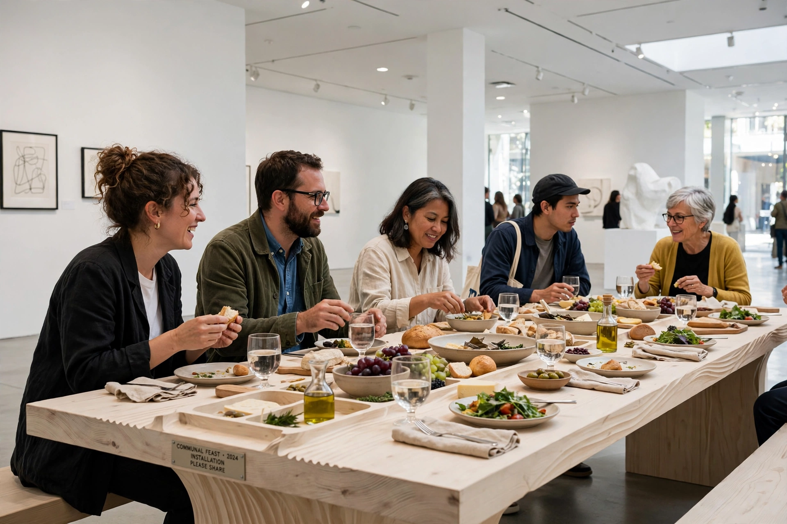

Relational art

Relational art or relational aesthetics is a mode or trend in fine art practice originally described by French curator Nicolas Bourriaud. Essentially, it is a set of artistic practices which take as their theoretical and practical point of departure the whole of human relations and their social context, rather than an independent and private space.
Bourriaud developed the concept in his 1998 book Esthétique relationnelle (Relational Aesthetics), drawing on exhibitions such as "Traffic" (CAPC Bordeaux, 1996) which he curated. The approach became one of the most influential — and contested — frameworks in contemporary art discourse of the 2000s.
Definition
Bourriaud defined relational aesthetics as "a set of artistic practices which take as their theoretical and practical point of departure the whole of human relations and their social context". The artwork creates a "social interstice" — a space within the gallery or public realm governed by rules of exchange different from everyday economic life, in which viewers become co-producers of the work. Bourriaud associated the tendency with the rise of the service economy, urbanisation and virtual communication, arguing that art had shifted from producing objects to staging situations and "micro-utopias" of conviviality.
Artists and works
- Rirkrit Tiravanija — cooked and served Thai curry to gallery visitors (Pad Thai, 1990) and restaged his own apartment in museums.
- Philippe Parreno and Pierre Huyghe — collaborative, event-based and time-sharing projects.
- Liam Gillick — platforms and discussion structures framing social exchange.
- Vanessa Beecroft, Jorge Pardo, Maurizio Cattelan and Dominique Gonzalez-Foerster were also included in Bourriaud's account.
- Carsten Höller's slides and Thomas Hirschhorn's monuments are often discussed in adjacent terms.
Criticism
In a widely cited 2004 essay in October, Claire Bishop questioned whether relational works produce genuinely democratic relations, arguing that their conviviality often presupposes a homogeneous audience and excludes antagonism — a quality she found in the more confrontational practices of Hirschhorn and Santiago Sierra. Others have criticised relational art's embrace by institutions and markets, and its tendency to aestheticise social services under neoliberalism. Grant Kester's work on "dialogical aesthetics" offers a related but distinct framework centred on sustained conversation and collaboration.